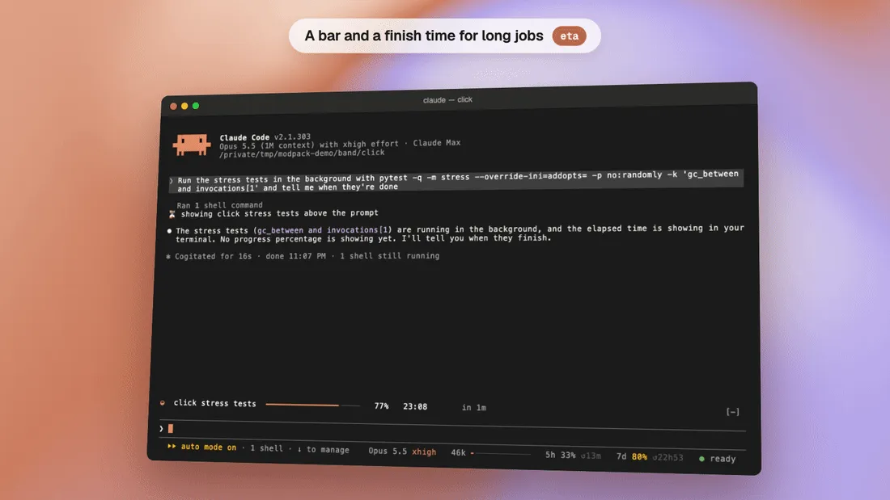

statusline
One line under the prompt with what matters.
The moment
You are deep in a session and wonder how full the conversation is, and how much of your plan’s limit is left.
Without statusline
Claude Code doesn’t show either at a glance. You find out when it compacts, or when you hit the limit.
With statusline
One line under the prompt: the model and its effort, how full the conversation is, how much of your plan’s 5-hour and weekly limits you have used and when each resets, and what other mods add, such as smart-compact’s ready or cold. On a narrow terminal it drops the least important parts first.
This is what you would see. Make the terminal narrower and watch which parts go first.
⏵⏵ auto mode on Opus 5.5 xhigh 412k ━━━━━━────── 5h 34% ↺2h14 7d 12% ↺3d ● ready · cold in 44m
Everything fits.
⏵⏵ auto mode on 412k ━━━━━━────── 5h 34% ↺2h14 ● ready · cold in 44m
Gone: the model and the 7-day window.
⏵⏵ auto mode on 412k ● ready · cold in 44m
Gone: the model, the 5-hour window and the 7-day window. Shortened: the context, to its number.
What we measured
Nothing to measure: it only adds a view. It draws nothing in a headless run, so our benchmarks never see it.
Where it doesn’t help
A session watched over Remote Control from the phone or the web gets no line. Where no line can be drawn, the same text becomes the session’s status.
Turn it on or off
placement moves it above the prompt or into Claude Code’s hint, and /mods statusline off turns it off. Every option is in the README; the code is in statusline/.
In a real session


Play the recording